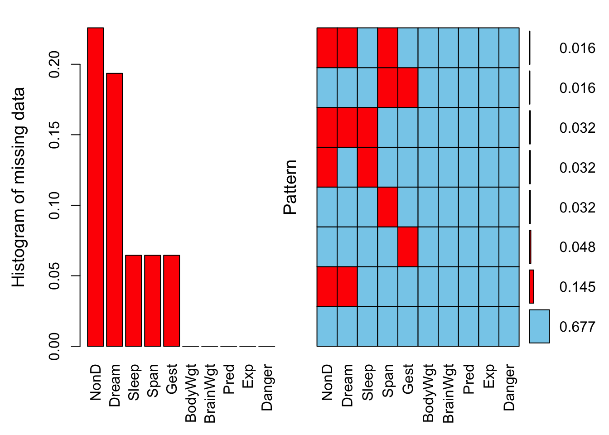
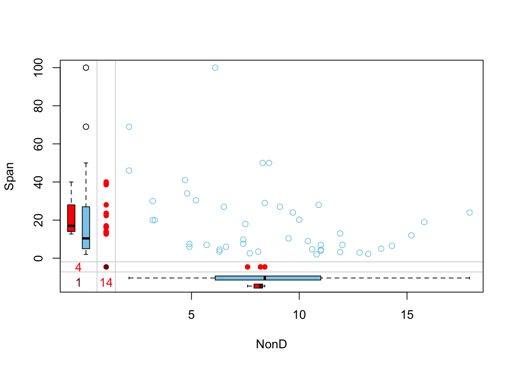

不同类型向量的处理
本章按照数据处理中不同的变量类型分别介绍常用的一些函数。这些函数大部分来自base包，但是为了保持一致性和贴合实际场景，本章的语法仍遵循tidyverse风格。
1 加载包和案例数据
2 逻辑向量（logical vectors）
用 nycflights13 包内“flights”数据集为例，该数据集包含 2013 年从纽约市起飞的所有 336,776 次航班的信息。下面是一个简单的生成逻辑向量的例子，在“flights”中新增两列，判断航班是否在白天起飞（新列命名为“daytime”），是否准时到达（到达延误<20 min，新列命名为“approx_ontime”）：
flights# A tibble: 336,776 × 19
year month day dep_time sched_dep_time dep_delay arr_time sched_arr_time
<int> <int> <int> <int> <int> <dbl> <int> <int>
1 2013 1 1 517 515 2 830 819
2 2013 1 1 533 529 4 850 830
3 2013 1 1 542 540 2 923 850
4 2013 1 1 544 545 -1 1004 1022
5 2013 1 1 554 600 -6 812 837
6 2013 1 1 554 558 -4 740 728
7 2013 1 1 555 600 -5 913 854
8 2013 1 1 557 600 -3 709 723
9 2013 1 1 557 600 -3 838 846
10 2013 1 1 558 600 -2 753 745
# ℹ 336,766 more rows
# ℹ 11 more variables: arr_delay <dbl>, carrier <chr>, flight <int>,
# tailnum <chr>, origin <chr>, dest <chr>, air_time <dbl>, distance <dbl>,
# hour <dbl>, minute <dbl>, time_hour <dttm>flights |>
mutate(
daytime = dep_time > 600 & dep_time < 2000,
approx_ontime = abs(arr_delay) < 20,
.keep = "used"
)# A tibble: 336,776 × 4
dep_time arr_delay daytime approx_ontime
<int> <dbl> <lgl> <lgl>
1 517 11 FALSE TRUE
2 533 20 FALSE FALSE
3 542 33 FALSE FALSE
4 544 -18 FALSE TRUE
5 554 -25 FALSE FALSE
6 554 12 FALSE TRUE
7 555 19 FALSE TRUE
8 557 -14 FALSE TRUE
9 557 -8 FALSE TRUE
10 558 8 FALSE TRUE
# ℹ 336,766 more rows2.1 逻辑摘要
any(x)：相当于|。如果“x”中有任何“TRUE”，则返回“TRUE”。all(x)：相当于&。只有当“x”中所有值均为“TRUE”时，才返回“TRUE”。
例如，我们可以使用 all() 和 any() 来判断所有航班的起飞延误是否都在一个小时以内，以及是否有任何航班在到达时延误了五个小时或以上。通过使用 group_by()，我们可以按月来统计：
flights |>
group_by(year, month, day) |>
summarize(
all_delayed = all(dep_delay <= 60, na.rm = TRUE),
any_long_delay = any(arr_delay >= 300, na.rm = TRUE),
.groups = "drop"
)# A tibble: 365 × 5
year month day all_delayed any_long_delay
<int> <int> <int> <lgl> <lgl>
1 2013 1 1 FALSE TRUE
2 2013 1 2 FALSE TRUE
3 2013 1 3 FALSE FALSE
4 2013 1 4 FALSE FALSE
5 2013 1 5 FALSE TRUE
6 2013 1 6 FALSE FALSE
7 2013 1 7 FALSE TRUE
8 2013 1 8 FALSE FALSE
9 2013 1 9 FALSE TRUE
10 2013 1 10 FALSE TRUE
# ℹ 355 more rows2.2 逻辑向量计数
在数学计算中使用逻辑向量时，“TRUE” 变为 1，“FALSE” 变为 0。因此，我们可以通过 sum() 和 mean() 来计数逻辑向量。sum() 可以给出 “TRUE” 的个数，而 mean() 可以给出 “TRUE” 的比例（因为 mean(x) = sum(x) ÷ length(x)）。
例如，我们可以统计每个月起飞延误在一小时以内的航班比例，以及抵达时延误五小时或以上的航班数量：
flights |>
group_by(year, month) |>
summarize(
proportion_delayed = mean(dep_delay <= 60, na.rm = TRUE),
count_long_delay = sum(arr_delay >= 300, na.rm = TRUE),
.groups = "drop"
)# A tibble: 12 × 4
year month proportion_delayed count_long_delay
<int> <int> <dbl> <int>
1 2013 1 0.931 25
2 2013 2 0.930 21
3 2013 3 0.916 64
4 2013 4 0.908 50
5 2013 5 0.918 47
6 2013 6 0.872 93
7 2013 7 0.866 140
8 2013 8 0.920 40
9 2013 9 0.951 58
10 2013 10 0.953 19
11 2013 11 0.960 19
12 2013 12 0.906 502.3 条件转换
逻辑向量最重要的应用之一是用于条件转换，即对条件 x 做一件事，而对条件 y 做另一件事。可以通过 base 包的 ifelse() 函数实现。而在 tidyverse 中的函数为：if_else() 和 case_when()。
if_else() 与 ifelse() 的使用基本相同。if_else() 可以通过指定 missing 参数来定义缺失值的表示形式，并且在确定输出类型时总是将 true、false 和 missing 考虑在内：
[1] "<3" "<3" "≥3" NA "≥3" "≥3" NA if_else(x <3, "<3", "≥3", missing = "Unknown")[1] "<3" "<3" "≥3" "Unknown" "≥3" "≥3" "Unknown"在统计分析中 ifelse() 和 if_else() 的一个十分常见的应用场景就是对变量进行赋值或替换已有赋值。例如我们可以根据到达延误时间（“arr_delay”）生成一个新变量“arr_2”，如果到达延误时间在30 min以内，赋值为“undelayed”，否则就为“delayed”：
# 新根据到达延误时间
flights %>%
mutate(
arr_2 = if_else(arr_delay <= 30, "undelayed", "delayed"),
.after = dep_delay
) # A tibble: 336,776 × 20
year month day dep_time sched_dep_time dep_delay arr_2 arr_time
<int> <int> <int> <int> <int> <dbl> <chr> <int>
1 2013 1 1 517 515 2 undelayed 830
2 2013 1 1 533 529 4 undelayed 850
3 2013 1 1 542 540 2 delayed 923
4 2013 1 1 544 545 -1 undelayed 1004
5 2013 1 1 554 600 -6 undelayed 812
6 2013 1 1 554 558 -4 undelayed 740
7 2013 1 1 555 600 -5 undelayed 913
8 2013 1 1 557 600 -3 undelayed 709
9 2013 1 1 557 600 -3 undelayed 838
10 2013 1 1 558 600 -2 undelayed 753
# ℹ 336,766 more rows
# ℹ 12 more variables: sched_arr_time <int>, arr_delay <dbl>, carrier <chr>,
# flight <int>, tailnum <chr>, origin <chr>, dest <chr>, air_time <dbl>,
# distance <dbl>, hour <dbl>, minute <dbl>, time_hour <dttm>如果需要进行多重逻辑判断的话需要嵌套使用 if_else() 。如：
flights %>%
mutate(
status = if_else(
is.na(arr_delay), "cancelled",
if_else(
arr_delay < -30, "very early",
if_else(
arr_delay < -15, "early",
if_else(
arr_delay <= 15, "on time",
if_else(
arr_delay < 60, "late", "very late"
)
)
)
)
),
.after = dep_delay
) %>%
select(status) %>%
table()status
cancelled early late on time very early very late
9430 70416 49313 159216 20084 28317 这种情况我们可以使用 case_when() 来避免 if_else() 的反复嵌套使用，让代码更简洁易懂。case_when() 受到了 SQL 的 CASE 语句的启发，提供了一种针对不同条件执行不同计算的灵活方式。它有一个特殊的语法：condition ~ output。其中 condition 必须是逻辑向量；当 condition 为 “TRUE” 时，将输出 output 。
flights %>%
mutate(
status = case_when(
is.na(arr_delay) ~ "cancelled",
arr_delay < -30 ~ "very early",
arr_delay < -15 ~ "early",
arr_delay <= 15 ~ "on time",
arr_delay < 60 ~ "late",
arr_delay < Inf ~ "very late",
),
.after = dep_delay
) %>%
select(status) %>%
table()status
cancelled early late on time very early very late
9430 70416 49313 159216 20084 28317 我们还可以通过添加 .default 参数，来指定默认的输出结果，当某个个案不满足所有列出的条件时就输出这个默认结果。在上面的例子中，如果我们添加了 .default = "very late" ，就不需要写 arr_delay < Inf ~ "very late" 了：
2.4 缺失值
2.4.1 判断缺失值
[1] FALSE TRUE FALSE[1] FALSE TRUE FALSE[1] FALSE TRUE FALSE我们可以使用 is.na() 查找缺失了“dep_time”的所有行：
# A tibble: 8,255 × 19
year month day dep_time sched_dep_time dep_delay arr_time sched_arr_time
<int> <int> <int> <int> <int> <dbl> <int> <int>
1 2013 1 1 NA 1630 NA NA 1815
2 2013 1 1 NA 1935 NA NA 2240
3 2013 1 1 NA 1500 NA NA 1825
4 2013 1 1 NA 600 NA NA 901
5 2013 1 2 NA 1540 NA NA 1747
6 2013 1 2 NA 1620 NA NA 1746
7 2013 1 2 NA 1355 NA NA 1459
8 2013 1 2 NA 1420 NA NA 1644
9 2013 1 2 NA 1321 NA NA 1536
10 2013 1 2 NA 1545 NA NA 1910
# ℹ 8,245 more rows
# ℹ 11 more variables: arr_delay <dbl>, carrier <chr>, flight <int>,
# tailnum <chr>, origin <chr>, dest <chr>, air_time <dbl>, distance <dbl>,
# hour <dbl>, minute <dbl>, time_hour <dttm>is.na() 在 arrange() 中也很有用。用 arrange() 基于某列排序时默认会将该列的所有缺失值放在最后，但可以先用 is.na() 进行降序排序，从而让缺失值在最前面显示：
# A tibble: 842 × 19
year month day dep_time sched_dep_time dep_delay arr_time sched_arr_time
<int> <int> <int> <int> <int> <dbl> <int> <int>
1 2013 1 1 517 515 2 830 819
2 2013 1 1 533 529 4 850 830
3 2013 1 1 542 540 2 923 850
4 2013 1 1 544 545 -1 1004 1022
5 2013 1 1 554 600 -6 812 837
6 2013 1 1 554 558 -4 740 728
7 2013 1 1 555 600 -5 913 854
8 2013 1 1 557 600 -3 709 723
9 2013 1 1 557 600 -3 838 846
10 2013 1 1 558 600 -2 753 745
# ℹ 832 more rows
# ℹ 11 more variables: arr_delay <dbl>, carrier <chr>, flight <int>,
# tailnum <chr>, origin <chr>, dest <chr>, air_time <dbl>, distance <dbl>,
# hour <dbl>, minute <dbl>, time_hour <dttm># 按照“dep_time”排序，同时将缺失值放到最前面
flights |>
filter(month == 1, day == 1) |>
arrange(desc(is.na(dep_time)), dep_time)# A tibble: 842 × 19
year month day dep_time sched_dep_time dep_delay arr_time sched_arr_time
<int> <int> <int> <int> <int> <dbl> <int> <int>
1 2013 1 1 NA 1630 NA NA 1815
2 2013 1 1 NA 1935 NA NA 2240
3 2013 1 1 NA 1500 NA NA 1825
4 2013 1 1 NA 600 NA NA 901
5 2013 1 1 517 515 2 830 819
6 2013 1 1 533 529 4 850 830
7 2013 1 1 542 540 2 923 850
8 2013 1 1 544 545 -1 1004 1022
9 2013 1 1 554 600 -6 812 837
10 2013 1 1 554 558 -4 740 728
# ℹ 832 more rows
# ℹ 11 more variables: arr_delay <dbl>, carrier <chr>, flight <int>,
# tailnum <chr>, origin <chr>, dest <chr>, air_time <dbl>, distance <dbl>,
# hour <dbl>, minute <dbl>, time_hour <dttm>2.4.2 删除缺失值
# A tibble: 328,521 × 19
year month day dep_time sched_dep_time dep_delay arr_time sched_arr_time
<int> <int> <int> <int> <int> <dbl> <int> <int>
1 2013 1 1 517 515 2 830 819
2 2013 1 1 533 529 4 850 830
3 2013 1 1 542 540 2 923 850
4 2013 1 1 544 545 -1 1004 1022
5 2013 1 1 554 600 -6 812 837
6 2013 1 1 554 558 -4 740 728
7 2013 1 1 555 600 -5 913 854
8 2013 1 1 557 600 -3 709 723
9 2013 1 1 557 600 -3 838 846
10 2013 1 1 558 600 -2 753 745
# ℹ 328,511 more rows
# ℹ 11 more variables: arr_delay <dbl>, carrier <chr>, flight <int>,
# tailnum <chr>, origin <chr>, dest <chr>, air_time <dbl>, distance <dbl>,
# hour <dbl>, minute <dbl>, time_hour <dttm># A tibble: 327,346 × 19
year month day dep_time sched_dep_time dep_delay arr_time sched_arr_time
<int> <int> <int> <int> <int> <dbl> <int> <int>
1 2013 1 1 517 515 2 830 819
2 2013 1 1 533 529 4 850 830
3 2013 1 1 542 540 2 923 850
4 2013 1 1 544 545 -1 1004 1022
5 2013 1 1 554 600 -6 812 837
6 2013 1 1 554 558 -4 740 728
7 2013 1 1 555 600 -5 913 854
8 2013 1 1 557 600 -3 709 723
9 2013 1 1 557 600 -3 838 846
10 2013 1 1 558 600 -2 753 745
# ℹ 327,336 more rows
# ℹ 11 more variables: arr_delay <dbl>, carrier <chr>, flight <int>,
# tailnum <chr>, origin <chr>, dest <chr>, air_time <dbl>, distance <dbl>,
# hour <dbl>, minute <dbl>, time_hour <dttm>加载案例数据：这里用 VIM 包内自带的 sleep 数据集为例进行演示。该数据集显示了两种安眠药对10名患者的影响(与对照组相比，睡眠时间的增加量)。其中就包含了很多缺失值。
BodyWgt BrainWgt NonD Dream Sleep Span Gest Pred Exp Danger
1 6654.000 5712.0 NA NA 3.3 38.6 645 3 5 3
2 1.000 6.6 6.3 2.0 8.3 4.5 42 3 1 3
3 3.385 44.5 NA NA 12.5 14.0 60 1 1 1
4 0.920 5.7 NA NA 16.5 NA 25 5 2 3
5 2547.000 4603.0 2.1 1.8 3.9 69.0 624 3 5 4
6 10.550 179.5 9.1 0.7 9.8 27.0 180 4 4 4# 为了和其他内容一致，我们将其转换成tibble
sleep <- as_tibble(sleep)
sleep# A tibble: 62 × 10
BodyWgt BrainWgt NonD Dream Sleep Span Gest Pred Exp Danger
<dbl> <dbl> <dbl> <dbl> <dbl> <dbl> <dbl> <int> <int> <int>
1 6654 5712 NA NA 3.3 38.6 645 3 5 3
2 1 6.6 6.3 2 8.3 4.5 42 3 1 3
3 3.38 44.5 NA NA 12.5 14 60 1 1 1
4 0.92 5.7 NA NA 16.5 NA 25 5 2 3
5 2547 4603 2.1 1.8 3.9 69 624 3 5 4
6 10.6 180. 9.1 0.7 9.8 27 180 4 4 4
7 0.023 0.3 15.8 3.9 19.7 19 35 1 1 1
8 160 169 5.2 1 6.2 30.4 392 4 5 4
9 3.3 25.6 10.9 3.6 14.5 28 63 1 2 1
10 52.2 440 8.3 1.4 9.7 50 230 1 1 1
# ℹ 52 more rows【展示缺失值的比例】
sleep %>%
aggr(
prop = T,
numbers = T,
sortVars = TRUE,
gap = 2,
ylab = c("Histogram of missing data", "Pattern")
)
Variables sorted by number of missings:
Variable Count
NonD 0.22580645
Dream 0.19354839
Sleep 0.06451613
Span 0.06451613
Gest 0.06451613
BodyWgt 0.00000000
BrainWgt 0.00000000
Pred 0.00000000
Exp 0.00000000
Danger 0.00000000左侧条形图以及输出的数值结果展示了单个变量的缺失比例。例如“NonD”缺失比例大于20%，从数值结果中可以看到具体为22.58%。
右侧直方图展示各个变量的缺失模式。如第一行表示“NonD”、“Dream”和“Span” 3个变量共同缺失的比例为1.6%。“NonD”的缺失比例 = 1.6% + 3.2% + 3.2% + 14.5% = 22.5%，和左侧条形图一致。所有变量均无缺失值的个案占67.7%。
【展示缺失值的数量】
aggr_plot <- sleep %>%
aggr(
prop = F,
numbers = T,
sortVars = TRUE,
gap = 2,
ylab = c("Histogram of missing data", "Pattern")
)
Variables sorted by number of missings:
Variable Count
NonD 14
Dream 12
Sleep 4
Span 4
Gest 4
BodyWgt 0
BrainWgt 0
Pred 0
Exp 0
Danger 0以表格的形式展示各个变量的缺失模式（同右侧图形）
summary(aggr_plot)
Missings per variable:
Variable Count
BodyWgt 0
BrainWgt 0
NonD 14
Dream 12
Sleep 4
Span 4
Gest 4
Pred 0
Exp 0
Danger 0
Missings in combinations of variables:
Combinations Count Percent
0:0:0:0:0:0:0:0:0:0 42 67.741935
0:0:0:0:0:0:1:0:0:0 3 4.838710
0:0:0:0:0:1:0:0:0:0 2 3.225806
0:0:0:0:0:1:1:0:0:0 1 1.612903
0:0:1:0:1:0:0:0:0:0 2 3.225806
0:0:1:1:0:0:0:0:0:0 9 14.516129
0:0:1:1:0:1:0:0:0:0 1 1.612903
0:0:1:1:1:0:0:0:0:0 2 3.225806【通过 marginplot() 分析缺失值】
# 分析“NonD”和“Span”的缺失关系
sleep %>%
select(NonD, Span) %>%
marginplot()
空心的湖蓝色圆圈表示非缺失值，红色实心圆圈表示缺失值，深红色实心圆圈表示两个变量均缺失。
图左侧的红色箱型图显示了在保留“NonD”缺失值的情况下“Span”的分布，蓝色箱型图显示了删除“NonD”缺失值后“Span”的分布。
图表底部的框图正好相反，反映了在保留和删除“Span”缺失值的情况下“NonD”的分布情况。
如果数据是完全随机缺失（MCAR : missing completely at random），那么红色和蓝色箱型图将十分接近
3 数值向量（numeric vectors）
3.1 转换数值向量
R 中的数值有两种类型：整数（integer）或双倍精度（double）。但有些时候由于导入数据的格式问题等原因数值会以字符串的形式保存。readr 提供了两个将字符串解析为数字常用函数：parse_double() 和 parse_number()。parse_number() 涵盖了parse_double() 的功能，同时能够进行数值解析。parse_number()会解析它找到的第一个数字，然后删除第一个数字之前的所有非数字字符和第一个数字之后的所有字符，同时也会忽略千分位分隔符“,”。所以在实际场景中主要使用 parse_number() 。
# 字符转数值。开头的非数值字符被忽略
c("euro1,000", "euro2,000") %>%
parse_number()[1] 1000 2000# 字符转数值。只输出找到的第一个数值
c("t1000t1000", "t2000t2000") %>%
parse_number()[1] 1000 2000# 小数点会被保留
c("1,234.56", "t1,234.56") %>%
parse_number()[1] 1234.56 1234.56# 货币转换。开头的“$”和千分位分隔符“,”被忽略
c("$1,000", "$1,500") %>%
parse_number() [1] 1000 1500# 可以通过locale参数指定在待转换向量中千分位分隔符(grouping_mark)和小数点(decimal_mark)的表示方法
c("1 234.56") %T>%
parse_number() %T>% print() %>%
parse_number(locale = locale(decimal_mark = ".", grouping_mark = " "))[1] "1 234.56"[1] 1234.563.2 计数
只需使用计数和一些基本算术，就能完成大量数据科学工作，因此 dplyr 努力通过 count() 使计数变得尽可能简单。这个函数非常适合在分析过程中进行快速探索和检查：
# 统计各个目的地的航班数
flights |> count(dest, sort = TRUE)# A tibble: 105 × 2
dest n
<chr> <int>
1 ORD 17283
2 ATL 17215
3 LAX 16174
4 BOS 15508
5 MCO 14082
6 CLT 14064
7 SFO 13331
8 FLL 12055
9 MIA 11728
10 DCA 9705
# ℹ 95 more rows记住，如果想查看所有值，可以使用 |> View() 或 |> print(n = Inf)。
可以使用 group_by()、summarize() 和 n() “手动”执行相同的计算。这在需要同时计算其他数据摘要时十分有用。例如，我们除了要统计各个目的地的航班数之外还需要统计到的各个目的地航班的平均延误时间：
# A tibble: 105 × 3
dest n delay
<chr> <int> <dbl>
1 ABQ 254 4.38
2 ACK 265 4.85
3 ALB 439 14.4
4 ANC 8 -2.5
5 ATL 17215 11.3
6 AUS 2439 6.02
7 AVL 275 8.00
8 BDL 443 7.05
9 BGR 375 8.03
10 BHM 297 16.9
# ℹ 95 more rowsn() 是一个特殊的摘要函数，不需要任何参数，而是访问 “当前” group 的信息。这意味着它只能在 dplyr 语句，如summarize() 、 mutate() 、 filter() 和 group_by() 等函数的内部使用。
3.2.1 n() 和 count() 的变体
计数唯一值
n_distinct() 计算一个或多个变量的唯一值的数量。例如，我们可以推荐每个目的地有多少家航空公司提供服务：
flights |>
group_by(dest) |>
summarize(carriers = n_distinct(carrier)) |>
arrange(desc(carriers))# A tibble: 105 × 2
dest carriers
<chr> <int>
1 ATL 7
2 BOS 7
3 CLT 7
4 ORD 7
5 TPA 7
6 AUS 6
7 DCA 6
8 DTW 6
9 IAD 6
10 MSP 6
# ℹ 95 more rows练习：查找由至少两家航空公司（“carrier”）运营的目的地（“dest”），并在每个目的地中挑选最优的一家航空公司，挑选标准为平均出发延误时间（“dep_delay”）和到达延误时间（“arr_delay”）最短的公司：
flights %>%
group_by(dest) %>%
mutate(
carrier_count = n_distinct(carrier)
) %>%
filter(carrier_count >= 2) %>%
group_by(dest, carrier) %>%
summarise(
mean_delay = mean(arr_delay, na.rm = T) + mean(dep_delay, na.rm = T)
) %>%
slice_min(mean_delay, n = 1) # A tibble: 76 × 3
# Groups: dest [76]
dest carrier mean_delay
<chr> <chr> <dbl>
1 ATL 9E 1.82
2 AUS WN -7.40
3 AVL 9E -14.7
4 BDL EV 24.4
5 BGR EV 27.5
6 BNA DL -31
7 BOS US -2.96
8 BQN B6 13.6
9 BTV 9E -7
10 BUF DL -14
# ℹ 66 more rows加权计数
加权计数是分组计算总和（sum()）。例如，统计每个航线飞机飞行的总里程数：
# A tibble: 4,044 × 2
tailnum miles
<chr> <dbl>
1 D942DN 3418
2 N0EGMQ 250866
3 N10156 115966
4 N102UW 25722
5 N103US 24619
6 N104UW 25157
7 N10575 150194
8 N105UW 23618
9 N107US 21677
10 N108UW 32070
# ℹ 4,034 more rows加权计数经常使用，因此 count() 有一个 wt 参数，可以实现同样的目的：
# A tibble: 4,044 × 2
tailnum n
<chr> <int>
1 D942DN 4
2 N0EGMQ 371
3 N10156 153
4 N102UW 48
5 N103US 46
6 N104UW 47
7 N10575 289
8 N105UW 45
9 N107US 41
10 N108UW 60
# ℹ 4,034 more rows# 统计每个航线飞行的总里程数
flights |> count(tailnum, wt = distance)# A tibble: 4,044 × 2
tailnum n
<chr> <dbl>
1 D942DN 3418
2 N0EGMQ 250866
3 N10156 115966
4 N102UW 25722
5 N103US 24619
6 N104UW 25157
7 N10575 150194
8 N105UW 23618
9 N107US 21677
10 N108UW 32070
# ℹ 4,034 more rows实际上如果指定了 wt 参数，就是对其分组进行 sum(wt) 操作。理解加权计数的作用的另一个很好的例子参考后面的章节。
计数缺失值
3.3 查找最大值和最小值
两个重要函数是 pmin() 和 pmax()，当给定两个或多个变量时，它们将返回每一行中最小或最大值：
df <- tribble(
~x, ~y,
1, 3,
5, 2,
7, NA,
)
df |>
mutate(
min = pmin(x, y, na.rm = TRUE),
max = pmax(x, y, na.rm = TRUE)
)# A tibble: 3 × 4
x y min max
<dbl> <dbl> <dbl> <dbl>
1 1 3 1 3
2 5 2 2 5
3 7 NA 7 7请注意， pmin() 和 pmax()不同于汇总函数 min() 和 max()，当给定两个或多个变量时，后者只返回单一值，即所有变量的最大值或最小值。在本例中，如果所有行的最小值和最大值都相同，就说明使用了错误的形式：
# A tibble: 3 × 4
x y min max
<dbl> <dbl> <dbl> <dbl>
1 1 3 1 7
2 5 2 1 7
3 7 NA 1 73.4 数学计算
3.4.1 整除和余数（modular arithmetic）
3.4.2 对数
在 R 中，有三种对数可供选择：
建议使用 log2() 或 log10()。log2() 容易解释，因为对数刻度上的差值为 1 相当于原始刻度的两倍，差值为-1 相当于减半；而 log10() 容易推算原始数值，例如 3 是 10^3 = 1000。log() 的倒数是 exp()；要计算 log2() 或 log10() 的原始数值，需要使用 2^ 或 10^。
3.4.3 四舍五入
round() 函数。第二个参数控制保留的小数位数：
# 保留两位小数
round(123.456, 2) [1] 123.46# 四舍五入到最接近的十位数
round(123.456, -1) [1] 120# 四舍五入到最接近的百位数
round(123.456, -2) [1] 100如果一个小数正好位于两个整数之间，即*.5的形式，round() 这时候会返回比较奇怪的结果（例如下面的例子）。这是因为 round() 使用了所谓的 “四舍五入，半为偶数”或银行家四舍五入法（Banker’s roundin）：即对于一个.5的小数，它将被四舍五入为离它最近的一个偶数。这是一种很好的策略，因为它能保持在对多个数值进行四舍五入后能够不偏不倚：*.5 小数的一半向上舍入，一半向下舍入。
另外两个取整函数：
3.5 切割数值向量
可以使用 cut() 将数值向量按照不同的截断值切割（又称bin）为不同的分段：
[1] <NA> <NA> <NA> (0,5] (0,5] (0,5] (5,15] (5,15] (15,20]
[10] <NA>
Levels: (0,5] (5,15] (15,20] [1] (-Inf,5] <NA> (-Inf,5] (-Inf,5] (-Inf,5] (-Inf,5] (5,15]
[8] (5,15] (15, Inf] (15, Inf]
Levels: (-Inf,5] (5,15] (15, Inf] [1] <NA> <NA> [0,5] [0,5] [0,5] [0,5] (5,15] (5,15] (15,20]
[10] <NA>
Levels: [0,5] (5,15] (15,20] [1] <NA> <NA> [0,5) [0,5) [0,5) [5,15) [5,15) [15,20] [15,20]
[10] <NA>
Levels: [0,5) [5,15) [15,20]cut()返回的结果是一个因子型向量“NA”以及任何超出截断值范围的值都将变为 “NA”
include.lowest：是否包括下截断值（默认为“FALSE”）right：是否包括上截断值（默认为“TRUE”）-
labels：给不同的分段打标签。注意，标签数应该比截断点少一个：
3.6 数值排名
dplyr 提供了许多受 SQL 启发的排名函数，例如 min_rank() ，它使用典型的方法来处理并列关系: 1st, 2nd, 2nd, 4th：
[1] 1 2 2 2 5 6 NA[1] 6 3 3 3 2 1 NA如果 min_rank() 无法满足需求，dplyr 还提供了很多变体排名函数：
row_number(): 为向量中的每个对象生成连续数字。row_number()可以不带任何参数，这种情况下常用于生成行号。dense_rank()：类似于min_rank()，但是生成连续排名，如：1st, 2nd, 2nd, 3thpercent_rank()：percent_rank(x)计算小于 xi 的值的总数 ÷ (x的总数 -1)cume_dist()：cume_dist(x)计算小于或等于 xi 的值的总数 ÷ x的总数
以上所有函数会忽略缺失值。
df <- tibble(x)
df |>
mutate(
row_number = row_number(),
row_number_x = row_number(x),
min_rank = min_rank(x),
dense_rank = dense_rank(x),
percent_rank = percent_rank(x),
cume_dist = cume_dist(x)
)# A tibble: 7 × 7
x row_number row_number_x min_rank dense_rank percent_rank cume_dist
<dbl> <int> <int> <int> <int> <dbl> <dbl>
1 1 1 1 1 1 0 0.167
2 2 2 2 2 2 0.2 0.667
3 2 3 3 2 2 0.2 0.667
4 2 4 4 2 2 0.2 0.667
5 3 5 5 5 3 0.8 0.833
6 4 6 6 6 4 1 1
7 NA 7 NA NA NA NA NA